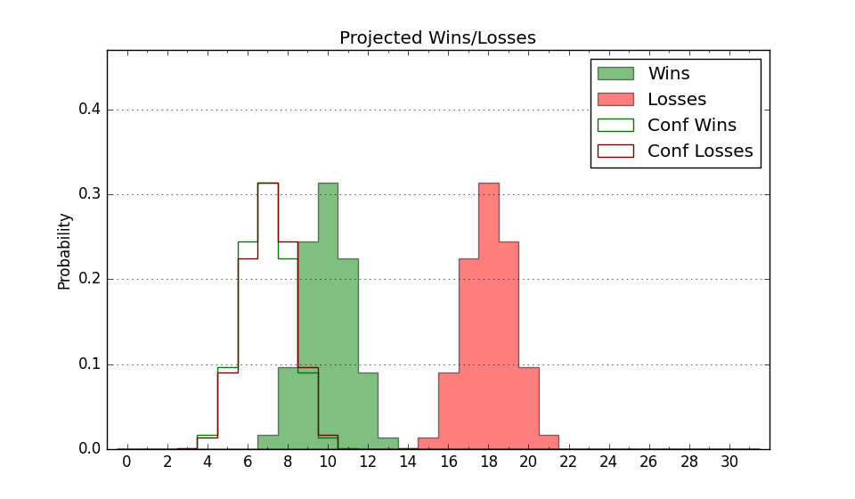

| Home | Game Probabilities | Conferences | Preseason Predictions | Odds Charts | NCAA Tournament |
| City: | Princeton, New Jersey | |
| Conference: | Ivy League (3rd)
| |
| Record: | 4-3 (Conf) 7-14 (Overall) | |
| Ratings: | Comp.: -6.4 (227th) Net: -6.5 (230th) Off: 103.5 (259th) Def: 110.0 (202nd) SoR: 0.0 (110th) |
| Remaining | ||||||
|---|---|---|---|---|---|---|
| Date | Opponent | Win Prob | Pred. | |||
| 2/7 | @ Penn (166) | 22.6% | L 67-75 | |||
| 2/13 | Cornell (177) | 51.3% | W 83-82 | |||
| 2/14 | Columbia (163) | 49.5% | L 70-71 | |||
| 2/20 | @ Brown (286) | 49.1% | L 63-64 | |||
| 2/27 | Harvard (172) | 50.8% | W 66-65 | |||
| 2/28 | Dartmouth (231) | 65.6% | W 74-69 | |||
| 3/7 | @ Yale (74) | 7.7% | L 64-80 | |||
| Previous | Game Score | |||||
| Date | Opponent | Win Prob | Result | Off | Def | Net |
| 11/8 | @Akron (63) | 7.0% | L 69-104 | -11.9 | -8.4 | -20.3 |
| 11/11 | Bucknell (335) | 86.1% | W 73-63 | -6.5 | -0.8 | -7.3 |
| 11/15 | @Kansas (11) | 1.3% | L 57-76 | -5.2 | 19.1 | 13.9 |
| 11/18 | @Iona (243) | 38.7% | L 69-89 | -11.7 | -11.5 | -23.2 |
| 11/20 | Northeastern (257) | 70.1% | W 70-57 | -7.7 | 21.1 | 13.4 |
| 11/24 | (N) Bradley (131) | 26.3% | L 64-88 | -11.0 | -13.6 | -24.5 |
| 11/25 | (N) Temple (168) | 35.3% | L 75-79 | 6.9 | -6.8 | 0.1 |
| 11/26 | (N) Vermont (224) | 49.2% | L 74-79 | 9.7 | -12.6 | -2.9 |
| 11/30 | (N) Saint Joseph's (167) | 35.2% | L 58-60 | -7.0 | 9.4 | 2.4 |
| 12/3 | @Monmouth (202) | 28.5% | L 58-63 | -13.1 | 11.3 | -1.7 |
| 12/6 | @Loyola Chicago (311) | 58.1% | L 68-73 | -2.1 | -8.4 | -10.5 |
| 12/10 | Merrimack (233) | 66.4% | L 56-59 | -9.5 | -3.5 | -12.9 |
| 12/22 | @Temple (168) | 22.8% | L 61-65 | -1.9 | 5.0 | 3.0 |
| 12/30 | Vermont (224) | 64.2% | W 75-69 | 0.8 | 3.4 | 4.2 |
| 1/5 | Penn (166) | 49.9% | W 78-76 | 10.9 | -9.2 | 1.7 |
| 1/10 | Yale (74) | 22.0% | W 76-60 | 15.2 | 29.9 | 45.0 |
| 1/17 | @Harvard (172) | 23.3% | L 80-87 | 19.1 | -16.7 | 2.4 |
| 1/19 | @Dartmouth (231) | 35.9% | L 69-71 | 15.4 | -6.5 | 8.9 |
| 1/24 | Brown (286) | 76.7% | W 63-53 | -3.4 | 11.6 | 8.2 |
| 1/30 | @Cornell (177) | 23.6% | L 64-87 | -3.5 | -14.8 | -18.3 |
| 1/31 | @Columbia (163) | 22.4% | W 80-68 | 29.0 | 3.6 | 32.6 |
| Stats & Trends | |||||
|---|---|---|---|---|---|
| Current | Day | Week | Month | Season | |
| Composite | -6.4 | +0.0 | +0.8 | +4.7 | -2.8 |
| Comp Rank | 227 | +3 | +8 | +43 | -64 |
| Net Efficiency | -6.5 | +0.0 | +0.9 | +5.9 | -- |
| Net Rank | 230 | +2 | +9 | +56 | -- |
| Off Efficiency | 103.5 | +0.0 | +1.6 | +7.0 | -- |
| Off Rank | 259 | -1 | +22 | +66 | -- |
| Def Efficiency | 110.0 | -0.0 | -0.7 | -1.0 | -- |
| Def Rank | 202 | -1 | -18 | -14 | -- |
| SoS Rank | 194 | -3 | +33 | +48 | -- |
| Exp. Wins | 10.0 | +0.0 | +0.7 | +2.6 | -4.5 |
| Exp. Conf Wins | 7.0 | +0.0 | +0.7 | +2.6 | -0.0 |
| Conf Champ Prob | 2.4 | -0.3 | +2.0 | +2.1 | -8.5 |

| Advanced Stats | ||
|---|---|---|
| Stat | Value | Rank |
| Off Eff FG % | 0.492 | 244 |
| Off Ast Ratio | 0.142 | 213 |
| Off ORB% | 0.261 | 299 |
| Off TO Rate | 0.160 | 267 |
| Off FT Ratio | 0.361 | 172 |
| Def Eff FG % | 0.509 | 159 |
| Def Ast Ratio | 0.137 | 99 |
| Def ORB% | 0.294 | 132 |
| Def TO Rate | 0.125 | 318 |
| Def FT Ratio | 0.357 | 196 |